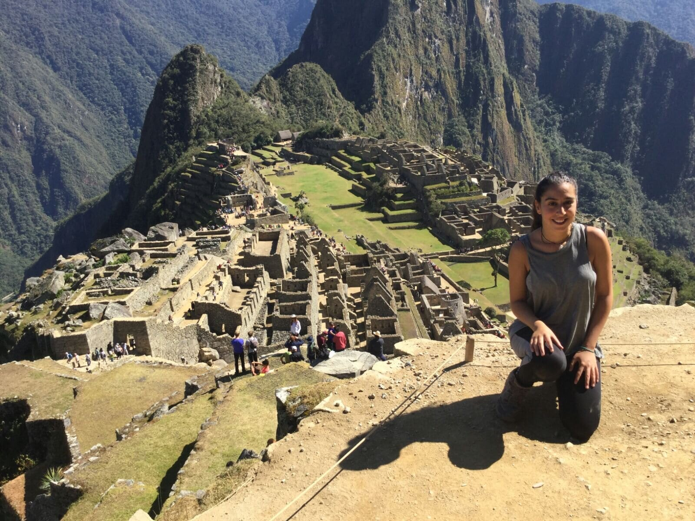

May Peretz Mulla
Management of Information Systems student. Quick learner, with strong communication
skills, organization and management skills looking for a challenge.
Motivated to learn, grow and excel in this field.
Let me introduce myself by the way I see the world...
Education
- 2018 – Current B.A in Management of Information Systems (MIS), Ben-Gurion University of the Negev.
About to start 3rd year, expected to graduate on June 2022.
GPA: 92 - 2006 – 2012 Full matriculation from 'Zinman' High School, Dimona.
Relevant Knowledge
♦ JAVA ♦ Python ♦ Excel ♦
Morocco, 2018
Military Service
2012 – 2017 - Human Resources (H.R) Officer, ranked as captain in Reserve Duty.
- Head of Officers Training in H.R training camp - Responsible for the training of senior officers in the corps.
- Creating courses, continuous administration of courses and interacting with senior officers in the corps.
- Human Resources Officer's Course Commander - Trained and counselled 65 human resource officers.
- Built lesson plans and taught professional training content.
- Human Resources Officer at battalion 196 - Fully responsible for the unit’s H.R and personnel management of the unit that consist of 550 soldiers.
- Taking care of the soldiers’ personal requests and developing the soldiers.
- Close work with the Unit Commander (ranked as Lieutenant Colonel).
- Direct commander of a department of 8 soldiers.

South america, 2017
South america, 2017